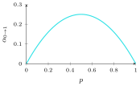

transition probability is ; output probabilities follow from input ones gate by gate (,
transition probability is ; output probabilities follow from input ones gate by gate (,  ) as long as the inputs are independent, which reconvergent fanout breaks.
) as long as the inputs are independent, which reconvergent fanout breaks.Method
Static probability . With temporal independence,
maximal () at . For independent inputs ,
,  :
:
| gate | p_out (independent inputs) | α 0→1 | with p_A = p_B = 1/2 |
|---|---|---|---|
| AND | p_A·p_B | (1 − p)·p | p = 1/4, α = 3/16 |
| OR | 1 − (1 − p_A)(1 − p_B) | (1 − p)·p | p = 3/4, α = 3/16 |
| NAND | 1 − p_A·p_B | (1 − p)·p | p = 3/4, α = 3/16 |
| XOR | p_A + p_B − 2·p_A·p_B | (1 − p)·p | p = 1/2, α = 1/4 |
With : NAND has , ; AND , ; XOR , .
Correlations
- Spatial: reconvergent fanout makes gate inputs dependent. For the formula gives , but . Exact computation conditions on the reconvergent signals (via cofactors) or uses BDDs.
- Temporal: real signals are correlated in time (counters, slowly varying data), so ; one uses transition probabilities directly.
Picture

 : largest at .
: largest at .Activity is highest for signals that are 1 half of the time.
Intuition
A node that is almost always 0 or almost always 1 rarely switches; balanced, random signals switch the most.
Pitfall
Propagating probabilities gate by gate ignores glitches: the zero-delay estimate underestimates the real activity of deep, unbalanced logic.